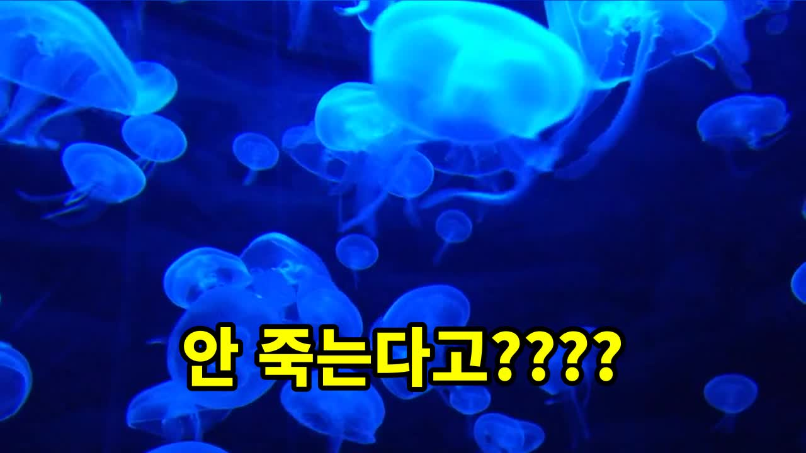

홍해파리(투리톱시스 도르니이)의 생물학적 불멸: 과학자들이 찾아낸 '영생' 비결

많은 사람들은 생물학적으로 불가능하다고 생각하는 영생을 꿈꾸지만, 자연에선 이러한 기적 같은 현상이 실제로 일어나고 있습니다. 오늘은 홍해파리(투리톱시스 도르니이)를 통해 생명의 놀라운 비결과 그것의 과학적 가치에 대해 이야기해볼까 합니다.
횡분화: 죽음 없이 다시 태어난다는 신비한 과정
1. 홍해파리의 생존 기술
홍해파리는 철저히 준비된 생명체입니다. 이 해파리는 성체가 되면 일정 수준에서 불능화되지만, 나이가 들거나 다치거나 굶주리면 다시 어린 폴립 단계로 돌아갑니다. 이를 횡분화라고 부르며, 과학자들은 이를 "생물학적 불멸"이라고 말합니다.
2. 생식의 비밀
과학자들이 이 과정을 이해하기 시작한 이유는 홍해파리가 성체에서 폴립으로 변하면서 동시에 새로운 생명체를 만들어내기 때문입니다. 이러한 횡분화는 결국 홍해파리를 영생 가능하게 만들었으며, 이는 과학적인 연구에 큰 흥미를 불러일으켰습니다.
3. 비결의 깊이
과학자들은 이 과정을 무한 반복할 수 있다는 점에서 생물학적으로 불멸이라는 용어를 사용합니다. 하지만 실상, 홍해파리는 포식자에게 잡아먹히거나 병에 걸리면 결국 죽습니다. 따라서 '영생'은 안 늙고 무한 반복한다는 두 가지 개념의 차이가 중요하다는 것을 명심해야 합니다.
과학적 연구와 적용
1. 현상의 발견과 연구 시작
1988년 이탈리아 해안에서 홍해파리의 횡분화 현상을 처음 관찰하게 되었습니다. 이는 곧 이탈리아 과학자들의 본격적인 연구를 불러일으켰으며, 현재까지도 인간 노화 연구에 이 원리를 응용하려는 다양한 실험들이 진행되고 있습니다.
2. 미래의 가능성
이 원리는 홍해파리를 포함하여 다른 생물체에도 적용할 수 있으며, 이를 통해 사람들의 노화 과정을 이해하고 치료 방법을 개발하는 데 큰 도움이 될 수 있을 것입니다. 그러나 아직까지 이러한 연구는 이론적인 단계에 머무르고 있으며, 실제 인간에게 적용되지는 않았습니다.
흔히 하는 실수와 팁
1. 과장된 해석 주의
홍해파리가 영생을 즐기고 있다는 잘못된 해석은 과학적 연구에 혼란을 초래할 수 있습니다. 따라서 이러한 비밀을 완전히 이해하기 위해서는 과학적인 자세와 정확한 정보가 필요합니다.
2. 생물학적 불멸의 진실
홍해파리의 '영생'은 단지 나이를 먹지 않고 다시 태어날 수 있는 능력에 불과하며, 포식자나 병원성 물질에 노출되면 결국 죽게 됩니다. 따라서 이 점을 명확히 이해하는 것이 중요합니다.
마무리
홍해파리는 생명의 놀라운 비결을 보여주고 있지만, 이 비결은 단지 생명의 한 단계를 무한 반복할 수 있는 능력에 불과하다는 것을 기억해야 합니다. 과학자들은 이러한 연구를 통해 인간 노화와 관련된 진보적인 이해와 치료 방법을 개발하려 노력하고 있으며, 미래에는 이러한 원리를 통해 더 나은 생명 질환 관리가 가능할 것입니다.
홍해파리의 비결이 여러분의 생활에 작은 변화를 가져다 줄 수 있기를 바랍니다.